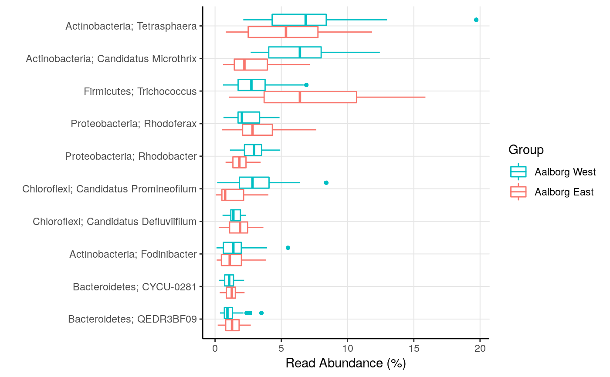

amp_boxplot.RdGenerates boxplots of the most abundant taxa.
amp_boxplot(data)
| data | (required) Data list as loaded with |
|---|---|
| group_by | Group the samples by a variable in the metadata. |
| sort_by | Sort the boxplots by |
| plot_type | Plot type. |
| point_size | The size of points. (default: |
| tax_aggregate | The taxonomic level to aggregate the OTUs. (default: |
| tax_add | Additional taxonomic level(s) to display, e.g. |
| tax_show | The number of taxa to show, or a vector of taxa names. (default: |
| tax_empty | How to show OTUs without taxonomic information. One of the following:
|
| tax_class | Converts a specific phylum to class level instead, e.g. |
| order_group | A vector to order the groups by. |
| order_y | A vector to order the y-axis by. |
| plot_flip | (logical) Flip the axes of the plot axis. (default: |
| plot_log | (logical) Log10-scale the plot. (default: |
| adjust_zero | Keep abundances of 0 in the calculation of medians by adding this value. (default: |
| normalise | (logical) Transform the OTU read counts to be in percent per sample. (default: |
| detailed_output | (logical) Return additional details or not. If |
A ggplot2 object. If detailed_output = TRUE a list with a ggplot2 object and additional data.
#Load example data data("AalborgWWTPs") #10 boxplots grouped by WWTP with phylum name added amp_boxplot(AalborgWWTPs, group_by = "Plant", tax_show = 10, tax_add = "Phylum")